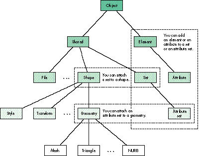
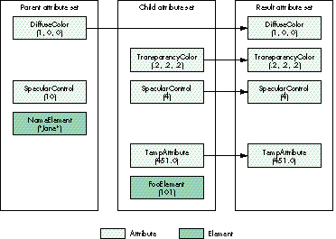
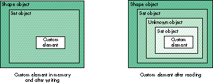

Custom attributes and elements provide a way to attach data such
as scaling information, sound, and strings to QuickDraw 3D
objects. In this article we explain how to create and attach custom
attributes and elements. We illustrate the process by showing you
how to attach a string containing a World Wide Web URL to a
QuickDraw 3D object to enable 3D navigation through the Web. We
also describe six new custom elements with implementations
included on this issue's CD.
In QuickDraw 3D, attribute objects (known more simply as attributes) generally
store information about the surface properties of objects in a model, such as color and
transparency. QuickDraw 3D defines 12 basic attribute types, and it also allows you to
define custom attribute and element types so that you can attach data different from the
predefined types to QuickDraw 3D objects. Your custom data need not apply to the
appearance of objects or to how objects are drawn, although it can.
For example, with custom attributes and elements you can add scaling information,
directional information, or sound to objects in your 3D scene. You can add a string
containing a name for a QuickDraw 3D object, so that you can refer to that object by
name and control it from a scripting language in your application. Your application can
enable users to navigate through the World Wide Web in 3D, by attaching a URL to a
QuickDraw 3D object, as illustrated by the code discussed in this article and included
on this issue's CD. These are just a few of the ways you can extend the functionality of
QuickDraw 3D and add value to your 3D application by adding custom data to objects.
Before we explain and illustrate how to create custom attributes and elements, and how
to attach them to QuickDraw 3D objects, we'll look at how attributes and elements
relate to each other and to other QuickDraw 3D objects. To get the most from this
article, you should already be familiar with the basics of QuickDraw 3D, as presented
in the previous develop articles "QuickDraw 3D: A New Dimension for Macintosh
Graphics" (Issue 22) and "The Basics of QuickDraw 3D Geometries" (Issue 23). The
book 3D Graphics Programming With QuickDraw 3D, included on this issue's CD,
provides complete documentation for the QuickDraw 3D programming interfaces.
Attributes and elements are types of QuickDraw 3D objects used to store information
about objects they're attached to. Each consists of a type and some associated data. You
apply attributes and elements to objects by creating an instance of a specific type of
attribute or element, defining its data, adding it to a set, and then attaching the set to
an object (if the set isn't already attached).
Note that attributes and elements are attached to objects, as opposed to simply being
added to a group. The reason for binding data to objects is that both QuickDraw 3D and
the 3DMF format maintain a strong data encapsulation model. For example, this allows
QuickDraw 3D objects to be moved from file to file without losing data.
ATTRIBUTES AND ELEMENTS IN THE QUICKDRAW 3D HIERARCHY
To better understand how attributes and elements relate to each other and to other
QuickDraw 3D objects, take a look at the partial class hierarchy shown in Figure 1. As
you can see, an attribute is actually a type of element (that is, it's a subclass of the
Element class, TQ3ElementObject). An element is any QuickDraw 3D object that can be
part of a set. In contrast with shared objects (objects of the class TQ3SharedObject),
elements aren't shared (that is, they can't be referenced by multiple objects or the
application at the same time) and are always removed from memory whenever they're
disposed of. An attribute has all of these properties but also can be inherited by
subclasses of the object it's attached to.

Figure 1. Partial QuickDraw 3D class hierarchy, showing set and attribute set
attachment
Custom data to be attached to an object can be stored in an element or an attribute. So
how do you decide which to use? Use an attribute when you want your custom data to be
inherited. For example, suppose we create a custom attribute named Temperature and
we want to be able to assign a different temperature to an entire geometry, a face, or a
vertex. During a view traversal loop, our attribute will be inherited along with the
other attributes. This becomes extremely important with the introduction of plug-in
renderers, which will be available in a future QuickDraw 3D release. A particular
renderer might take advantage of this inherited attribute by coloring each vertex
according to the temperature inherited.
SETS AND ATTRIBUTE SETS
We mentioned earlier that attributes and elements are usually collected in sets. A set
is an instance of the Set class (TQ3SetObject), which in turn is a subclass of the
Shared class (TQ3SharedObject), as shown in Figure 1. A set collects zero or more
different elements or attributes and their associated data; it can contain only one
element or attribute of a given type. Anattribute set is a type of set; in fact,
TQ3AttributeSet is the only subclass of the class TQ3SetObject. An attribute set has all
the properties of a set but also allows inheritance.
Both elements and attributes can be collected in sets and attribute sets. Since the
AttributeSet class is derived from the Set class, you can call Q3Set_XX on an attribute
set, but you can't call Q3AttributeSet_XX on a set. In the text that follows, be sure to
pay attention to whether we're talking about sets or attribute sets; we don't use the
terms interchangeably.
Sets and attribute sets can't be attached to just any QuickDraw 3D object, but only to
those objects for which it makes sense to store additional data in this way. Attribute
sets can be attached to view objects, group objects, and geometric objects, plus most of
the parts of a geometric object: faces, vertexes, mesh edges, and mesh corners. (See
"How to Attach Attribute Sets" for details.) In contrast, sets can be attached only to
objects in the Shape class or subclasses of the Shape class. (Attaching a set to a shape
is fairly straightforward; we give an example of how to do this later, in Listing 3.)
The Shape class actually has a class field of type set, meaning that any class derived
from Shape has a set object. The Geometry class has a class field of type set (inherited
from the Shape class) plus a class field of typeattributeSet, meaning that any class
derived from Geometry has both a set object and an attribute set object.
______________________________
It may be news to you that attribute sets can be attached to views or groups,
because how to do this is less than obvious. We'll tell you how.
To attach an attribute set to a view object, use the
Q3View_GetDefaultAttributeSet routine to get the default attribute set (all
view objects have one), and then use Q3AttributeSet_Add to add attributes to
that set. For example, the following code shows how to apply a default specular
color to all objects submitted to a view.
Q3View_GetDefaultAttributeSet(theDocument
->theView, &viewSet);
Q3AttributeSet_Add(viewSet,
kQ3AttributeTypeSpecularColor, &clearColor);
Q3Object_Dispose(viewSet);
You can still override the default behavior of the view by attaching attributes
to objects before submitting them. If you write the view hints out in 3DMF
format using the QuickDraw 3D API, the attribute set for the view will also be
written out. You can preserve these settings by looking in and using the view
hints when you read the 3DMF data back in.
To attach an attribute set to a group object, just add the attribute set to the
group before you add the object you want it to be applied to.
Attaching an attribute set to a geometric object or a part of a geometric object
is much more obvious, so we won't go into details here. Later in this article,
Listing 2 gives an example of how to do it.
______________________________
Currently, the renderers shipped with QuickDraw 3D ignore custom data attached to
shape objects, but when plug-in renderers become available, they may pay attention
to such data and use it to control certain rendering features. For example, a ray tracer
renderer may need custom data about surfaces to render them with bump mapping.
ATTRIBUTES AND INHERITANCE
When the objects in a view are rendered, attributes attached to the objects are applied
according to a strict hierarchy. The attribute sets of objects higher in the view
hierarchy are inherited by objects below them, unless some other attribute set
overrides them. Inheritance proceeds from view to group to geometric object to face to
mesh edge to vertex to mesh corner. In other words, in the hierarchy, view attributes
are always inherited unless a group contains overriding attributes; group attributes
can be overridden by geometric object attributes, which can be overridden by face
attributes, and so on.
When you define a custom attribute, you can specify that you want it to be inherited
by including an attribute inheritance method in your metahandler. (More on
metahandlers later.) Inheritance happens when you call Q3AttributeSet_Inherit:
TQ3Status Q3AttributeSet_Inherit(TQ3AttributeSet parent,
TQ3AttributeSet child, TQ3AttributeSet
result);
This call takes three attribute sets: the parent, the child, and a result attribute set to
store results in, which becomes the effective attribute set after inheritance. During
inheritance, any attribute in the parent that's not in the child is copied into the result,
and all child attributes are copied into the result, as illustrated by the example in
Figure 2. As mentioned earlier, only attributes can be inherited; elements, such as the
name element "Jane" in this example, can exist in an attribute set but aren't inherited.

Figure 2.Attribute inheritance
Now that you have a sense of how custom attributes and elements relate to each other
and to other QuickDraw 3D objects, we'll outline how you define, register, and attach
your custom data to the QuickDraw 3D objects of your choice. We'll further illustrate
the process later in our example of attaching a URL to a QuickDraw 3D object.
DEFINING AND REGISTERING YOUR CUSTOM DATA
To define a custom attribute or element type, you need to provide a definition of the
data associated with that type and write a metahandler to define a set of attribute- or
element-handling methods. Once you've defined and registered your custom attribute
or element type, you manipulate objects of that type exactly as you manipulate the
standard QuickDraw 3D attributes. For example, you create a new attribute set by
calling Q3AttributeSet_New, and you add custom attributes to the attribute set by
calling Q3AttributeSet_Add. Finally, you attach the attribute set to an object by calling
an appropriate QuickDraw 3D routine.
Before you can use your custom element or attribute, you must register it with
QuickDraw 3D by calling Q3ElementClass_Register or Q3AttributeClass_Register:
TQ3ObjectClass Q3ElementClass_Register(TQ3ElementType elementType, const char *name, unsigned long sizeOfElement, TQ3MetaHandler metaHandler); TQ3ObjectClass Q3AttributeClass_Register(TQ3AttributeType attributeType, const char *name, unsigned long sizeOfElement, TQ3MetaHandler metaHandler);
The functions take these parameters:
A metahandler is an application-defined function that returns the addresses of the
methods associated with the custom attribute or element type. QuickDraw 3D calls
these methods at certain times to handle operations on sets and attribute sets that
contain your custom data. Particular methods are required for each QuickDraw 3D
object type, and QuickDraw 3D asks the metahandler repeatedly for these required
methods. Your metahandler should, by default, return NULL for unrecognized methods;
this allows Apple to add methods in the future without breaking the implementation of
old versions of elements and attributes.
A metahandler can define some or all of the methods indicated by the constants listed
below. Custom elements or attributes that are to be read from and written to files
should support the I/O methods associated with objects (those methods beginning with
"kQ3MethodTypeObject" in the following list). The metahandler can also support all
the methods associated with elements (those methods beginning with
"kQ3MethodTypeElement" in the list) and attributes (those methods beginning with
"kQ3MethodTypeAttribute"). Note that the copy methods always take the source as the
first parameter (from) and the destination as the second parameter (to), although
what these point to differs for each copy method. All of the following method types are
optional. If you supply no method for a particular attribute or element type, your
attribute or element will inherit the default behavior of the parent class.
Listing 1 shows a typical metahandler for a custom element in QuickDraw 3D. Take a
look at the QuickDraw 3D header file QD3DIO.h to see the object methods and at
QD3DSet.h to see the element and attribute methods.
Listing 1. A typical metahandler for a custom element
TQ3FunctionPointer MyMetaHandler(TQ3MethodType methodType)
{
switch (methodType) {
case kQ3MethodTypeObjectTraverse:
return (TQ3FunctionPointer) MyElementTraverse;
case kQ3MethodTypeObjectWrite:
return (TQ3FunctionPointer) MyElementWrite;
case kQ3MethodTypeObjectReadData:
return (TQ3FunctionPointer) MyElementReadData;
case kQ3MethodTypeElementCopyAdd:
return (TQ3FunctionPointer) MyElementCopyAdd;
case kQ3MethodTypeElementCopyReplace:
return (TQ3FunctionPointer) MyElementCopyReplace;
case kQ3MethodTypeElementCopyGet:
return (TQ3FunctionPointer) MyElementCopyGet;
case kQ3MethodTypeElementCopyDuplicate:
return (TQ3FunctionPointer) MyElementCopyDuplicate;
case kQ3MethodTypeElementDelete:
return (TQ3FunctionPointer) MyElementDelete;
default:
return (TQ3FunctionPointer) NULL;
}
}
ATTACHING YOUR CUSTOM DATA
Now we'll show you how to add the custom data you've defined to a set or an attribute
set and then attach that set or attribute set to an object. Note that when you want to
attach custom data to a geometric object or some part of a geometric object, you
actually have a choice of where to attach the data. You can add the data to an attribute
set and attach it to the geometry or some part of the geometry, or you can add the same
data to a set and attach that set to a shape, since the geometry inherits from the shape.
Where and how data is attached to an object is really up to the semantics of your
application. Just be sure to consistently attach data in the same place on all objects,
and document what you've done, especially if you want your custom element or
attribute to be used by other developers.
To illustrate this concept, Listing 2 creates a new attribute set, adds our custom data
to the attribute set, and attaches the attribute set to a mesh vertex. This is a fine way
to customize a geometric object or some part of a geometric object. But if you want to
add your custom data to some other subclass of the Shape class, you'll want to add the
data to a set and attach that set to the shape. Listing 3 does just that.
Listing 2. Attaching an attribute set to a vertex
/* Get the existing attribute set (if any). */
Q3Mesh_GetVertexAttributeSet(mesh, someVertex, &theAttrSet);
/* If there's no attribute set we get back NULL and create one. */
if (theAttrSet == NULL) {
/* Create a new empty attribute set. */
theAttrSet = Q3AttributeSet_New();
if (theAttrSet == NULL)
return kQ3Failure;
Q3Mesh_SetVertexAttributeSet(mesh, someVertex, theAttrSet);
}
/* Add the custom data to the attribute set. */
if (Q3AttributeSet_Add(theAttrSet, kMyCustomDataType, &myCustomData)
== kQ3Failure) {
Q3Object_Dispose(theAttrSet);
return kQ3Failure;
}
Q3Object_Dispose(theAttrSet);
return kQ3Success;
Listing 3. Attaching a set to a shape
/* Get the existing set (if any). */
Q3Shape_GetSet(shape, &theSet);
/* If there's no set, add one. */
if (theSet == NULL) {
theSet = Q3Set_New();
if (theSet == NULL)
return kQ3Failure;
Q3Shape_SetSet(shape, theSet);
}
/* Add the custom data to the set. */
if (Q3Set_Add(theSet, kMyCustomDataType, &myCustomData)
== kQ3Failure) {
Q3Object_Dispose(theSet);
return kQ3Failure;
}
Q3Object_Dispose(theSet);
return kQ3Success;
Now we're going to illustrate how to define, register, and attach a custom element to a
QuickDraw 3D object, and how to extract and use that custom data. Our custom element
is a string containing a URL (uniform resource locator, a popular way of specifying
the location of an online resource on the Web); we'll attach it to a geometry object. We
make it an element rather than an attribute because it doesn't need to be inheritable.
When the object we attach the custom element to is read into one of the many viewers
that support custom elements, the viewer can communicate through Apple events with
applications like Netscape Navigator (TM) (or your favorite Web browser) to produce
3D navigation. A sample application that illustrates the idea is included on this issue's
CD. See "3D Web Content Using 3DMF and Netscape Navigator" for more details.
The custom attribute we define and use here, W3Anchor, is one of the six custom
elements described later in this article.
______________________________
BY JOHN LOUCH
With the advent of Netscape Navigator 2.0 and its plug-in architecture, you
can extend content on the Web to handle multimedia or 3D media. The ease of
publishing 3D content will make Apple's 3DMF data format ubiquitous on the
Web. A sample Netscape plug-in, Whurlplug, on this issue's CD shows what a
3D plug-in based on QuickDraw 3D might look like.
Whurlplug uses the QuickDraw 3D Viewer shared library as its interface for
displaying 3D Web content. The Viewer gives users of Whurlplug a seamless
integration with the current metaphors for handling 3D content on the Mac OS.
Whurlplug also tries to use the same human interface metaphors and
behaviors as Netscape.
Whurlplug can be embedded in a Hypertext Markup Language (HTML) page or
take over the whole window (as in the URL example in this article). If the
plug-in is embedded, it will assume the same background color as the HTML
page it's embedded in. Holding down the mouse button on the Viewer toolbar
will pop up a menu allowing you to set the Viewer options and save the
Web-based 3DMF object to disk, so it's consistent with other elements of the
Netscape browser's user interface.
There are a number of ways to present a 3D scene to a Web user. You can
enable the user to fly through a 3D world, or simply to view an HTML page
with 3D content. To handle the different ways that Whurlplug might be used,
we extended the HTML syntax that the plug-in understands if it's embedded in a
page. Here's the Embed command syntax:
<EMBED SRC="3DObject.3dmf" WIDTH=100 HEIGHT=200>
Six more arguments for this extension to HTML can be used in a description of
a 3DMF object:
Whurlplug understands 3D models that have URL or anchor links in them. If
the cursor moves over a 3D object that has an anchor link in it, the object
flashes red and the URL is displayed in Netscape's toolbar. Clicking on that
object causes Netscape to go to that URL, which could be anything from another
QuickDraw 3D object to any type of page that Netscape understands. Currently,
the only way to add anchors to a QuickDraw 3D object is through the
applications BeWhurled (on this issue's CD), 3D World, and Studio Pro Blitz,
but the URL example in this article shows how you can add the anchor custom
attribute to data in your own 3D application.
The mime type and subtype for 3DMF are x-world/x-3dmf. The extensions
that Whurplug understands are .3dmf, .3dm, .qd3d, and .qd3. Your Web server
has to either set the mime type and subtype of 3D files to x-world/x-3dmf or
name the files so that the extension is one of those Whurlplug understands.
Following is a trivially simple HTML description of a Web page that uses this
viewer. By the time you read this, there will be (we hope) a number of sites
with 3DMF data on their Web pages that can be viewed in Netscape. Check out
the QuickDraw 3D Web page for more details.
<TITLE> A 3D Web page <\TITLE>
<EMBED SRC="3DObject.3dmf" WIDTH=200 HEIGHT=200
SPIN=true ACTIVE=false>
<P>
<A HREF="3DObject.3dmf">Click here for a full
view</A>
______________________________
DEFINING OUR DATA STRUCTURE
We first need to define the internal structure of the data associated with our custom
element type. We'll use the W3AnchorData structure, defined like this:
typedef enum W3AnchorOptions {
kW3AnchorOptionNone = 0,
kW3AnchorOptionUseMap = 1
} W3AnchorOptions;
typedef struct W3AnchorData {
char *url;
TQ3StringObject description;
W3AnchorOptions options;
} W3AnchorData;
Theurl field is a C string consisting of the URL data. The description object is
information that the application must present to users to enable them to decide
whether the site or data pointed to by the URL is worth examining (since the process
could take some time). Note that since the description is a string object, it can be
specified in a script other than Roman. The options field specifies whether the
position (x,y) that was clicked should be passed back to the Web viewer.
REGISTERING OUR CUSTOM ELEMENT
Before we can use our custom element, we need to tell QuickDraw 3D that we've defined
it, by implementing a registration routine. There may be occasions when we want to
recognize a custom element for only a limited period of time, so an unregister routine
can also be implemented.
We need to define a couple of parameters before we can register our custom element:
an object type, which is a four-character identifier packed into a long word, and a
string, which is used to help uniquely identify the element. As mentioned earlier, both
of these need to be registered with the Developer Support Center to avoid name space
collisions, and each must be unique within their respective name spaces.
#define kElementTypeW3Anchor \
((TQ3ElementType) Q3_OBJECT_TYPE('w','w','w','a'))
#define kElementNameW3Anchor "W3Anchor"
Now we register the custom element:
TQ3Status W3Anchor_Register(void)
{
gW3AnchorClass = Q3ElementClass_Register(kElementTypeW3Anchor,
kElementNameW3Anchor, sizeof(W3AnchorData),
W3Anchor_MetaHandler);
return (gW3AnchorClass == NULL ? kQ3Failure : kQ3Success);
}
When you register custom attributes or elements with Q3ElementClass_Register, the
name you use doesn't have to be the exact same name used by other developers for that
type. As an example, the W3Anchor type is defined as 'wwwa' and its name is
"W3Anchor." An Apple implementation of this attribute might be registered as
Q3ElementClass_Register('wwwa', "Apple:W3Anchor"), and a third party's
implementation might be registered as Q3ElementClass_Register('wwwa',
"Microspot:W3Anchor"). The name is unimportant; because both of the
implementations have the same type, data written by one will, if the implementation of
both is the same, be read by the other.
DEFINING OUR METAHANDLER
Whenever QuickDraw 3D needs to operate on the data encapsulated by our custom
element, it will call our metahandler, which we supplied a pointer to in the
registration routine. Our metahandler (Listing 4) returns the addresses of the
methods associated with our element type. We supply object I/O methods to preserve
our element during I/O, and copy methods to allocate and manage the string memory.
We return NULL by default, to indicate that unknown methods aren't supported and that
a default method should be used. The definition for each of the routines is on this
issue's CD.
Listing 4. The metahandler for our custom element
static TQ3FunctionPointer W3Anchor_MetaHandler(TQ3MethodType
methodType)
{
switch (methodType) {
case kQ3MethodTypeObjectTraverse:
return (TQ3FunctionPointer) W3Anchor_Traverse;
case kQ3MethodTypeObjectWrite:
return (TQ3FunctionPointer) W3Anchor_Write;
case kQ3MethodTypeObjectReadData:
return (TQ3FunctionPointer) W3Anchor_ReadData;
case kQ3MethodTypeElementCopyAdd:
case kQ3MethodTypeElementCopyGet:
case kQ3MethodTypeElementCopyDuplicate:
return (TQ3FunctionPointer) W3Anchor_CopyAdd;
case kQ3MethodTypeElementCopyReplace:
return (TQ3FunctionPointer) W3Anchor_CopyReplace;
case kQ3MethodTypeElementDelete:
return (TQ3FunctionPointer) W3Anchor_Delete;
default:
return (TQ3FunctionPointer) NULL;
}
}
IMPLEMENTING THE METHODS
Listing 5 shows how the three element methods -- W3Anchor_CopyAdd,
W3Anchor_CopyReplace, and W3Anchor_Delete -- are implemented. Note in Listing 4
that the same function, W3Anchor_CopyAdd, is used for the CopyAdd, CopyGet, and
CopyDuplicate methods. This means that the data pointer passed into Q3Set_Add and
Q3Set_Get is a pointer to the same structure as the internal structure. If you want to
see how the I/O methods are implemented, look at the source code for our custom
element on the CD.
Listing 5. Implementing the element methods
/* W3Anchor_CopyAdd adds the WWW data from src to dst. */
static TQ3Status W3Anchor_CopyAdd(W3AnchorData *src, W3AnchorData
*dst)
{
long i;
/* Check to see if src is a valid W3Anchor. */
if (src->url == NULL)
return kQ3Failure;
/* We need to allocate memory for the string that belongs to */
/* dst. */
i = strlen(src->url);
if (i == 0)
return kQ3Failure;
dst->url = (char *) malloc(i + 1);
if (dst->url == NULL)
return kQ3Failure;
/* Copy the string from src to dst. */
strcpy(dst->url, src->url);
/* Check to see if src had a description. */
if (src->description) {
TQ3StringObject stringReference;
/* Get a reference to src's description object. */
stringReference = Q3Shared_GetReference(src->description);
if (stringReference == NULL)
return kQ3Failure;
dst->description = stringReference;
} else
dst->description = NULL;
/* Just copy the options, since they're just values. */
dst->options = src->options;
return kQ3Success;
}
/* W3Anchor_CopyReplace substitutes the WWW data in src for the data
in dst. */
static TQ3Status W3Anchor_CopyReplace(W3AnchorData *src,
W3AnchorData *dst)
{
long i;
char *c;
/* Check to see if src is a valid W3Anchor. */
if (src->url == NULL)
return kQ3Failure;
/* We need to have enough memory for the string from src. */
i = strlen(src->url);
if (i == 0)
return kQ3Failure;
c = (char *) realloc(dst->url, i + 1);
if (c == NULL)
return kQ3Failure;
dst->url = c;
strcpy(dst->url, src->url);
if (src->description) {
TQ3StringObject stringReference;
/* Get a reference to src's description object. */
stringReference = Q3Shared_GetReference(src->description);
if (stringReference == NULL)
return kQ3Failure;
if (dst->description)
Q3Object_Dispose(dst->description);
dst->description = stringReference;
} else
dst->description = NULL;
dst->options = src->options;
return kQ3Success;
}
/* W3Anchor_Delete cleans up the references and memory allocations. */
static TQ3Status W3Anchor_Delete(W3AnchorData *myURLData)
{
if (myURLData->url != NULL) {
free(myURLData->url);
myURLData->url = NULL;
}
if (myURLData->description != NULL) {
Q3Object_Dispose(myURLData->description);
myURLData->description = NULL;
}
return kQ3Success;
}
ATTACHING THE CUSTOM ELEMENT
Once we've set up our metahandler and associated routines, we can use the normal set
and attribute set routines to add elements and attributes of our custom type. Listing 6
shows how we add our custom element to a set and attach the set to a shape object. Our
geometric object will then inherit the set from the shape.
Listing 6. Adding our custom element to a set and attaching the set to an object
TQ3AttributeSet theSet;
W3AnchorData QD3DHomePage;
theSet = Q3Set_New();
if (theSet) {
char *description = "Apple QuickDraw 3D Home Page",
*url = "http://www.info.apple.com/qd3d";
QD3DHomePage.url = malloc(strlen(url) + 1);
if (QD3DHomePage.url) {
strcpy(url, QD3DHomePage.url);
QD3DHomePage.description = Q3CString_New(description);
QD3DHomePage.options = 0;
/* Add the anchor data to the set. */
Q3Set_Add(theSet, kElementTypeW3Anchor, &QD3DHomePage);
/* The data has been copied and objects referenced, so we need
to clean up after ourselves. */
free(QD3DHomePage.url);
Q3Object_Dispose(QD3DHomePage.description);
}
/* Attach the set to a shape. */
Q3Shape_SetSet(aShape, theSet);
Q3Object_Dispose(theSet);
}
GETTING THE CUSTOM DATA FROM THE OBJECT
At some point your application will want to extract the custom data you've attached to
an object. In our sample application, that point is reached when the user clicks on an
object or the cursor passes over an object. The W3Anchor_GetFromObject routine
(Listing 7) gets custom data from an object passed into the routine, using the
QuickDraw 3D routines Q3Set_Contains and Q3Set_Get.
Listing 7. Getting our custom data from the object
TQ3Boolean W3Anchor_GetFromObject(TQ3Object object, W3AnchorData
*data)
{
TQ3SetObject set;
TQ3Boolean result;
W3Anchor_Empty(data);
data->url = NULL;
data->description = NULL;
set = NULL;
/* The object passed in must be a shape or a geometry. */
if (Q3Object_IsType(object, kQ3ShapeTypeGeometry) == kQ3True) {
Q3Geometry_GetAttributeSet(object, &set);
if (set != NULL) {
result = W3Anchor_GetFromSet(set, data);
Q3Object_Dispose(set);
if (result == kQ3True)
return result;
set = NULL;
}
}
if (Q3Object_IsType(object, kQ3SharedTypeShape) == kQ3True) {
Q3Shape_GetSet(object, &set);
if (set != NULL) {
result = W3Anchor_GetFromSet(set, data);
Q3Object_Dispose(set);
return result;
}
}
return kQ3False;
}
TQ3Boolean W3Anchor_GetFromSet(TQ3SetObject set, W3AnchorData *data)
{
TQ3Object unkObj;
TQ3Boolean result;
TQ3GroupPosition position;
result = kQ3False;
/* Ideally, you'll find one of these. */
if (Q3Set_Contains(set, kElementTypeW3Anchor) == kQ3True) {
if (Q3Set_Get(set, kElementTypeW3Anchor, data) == kQ3Failure)
return kQ3False; /* Error: Contains, but can't get! */
return kQ3True;
}
/* But due to a bug in QuickDraw 3D versions prior to 1.0.4, the
element may be contained within another set in the unknown
element. */
if (Q3Set_Contains(set, kQ3ElementTypeUnknown) == kQ3True) {
if (Q3Set_Get(set, kQ3ElementTypeUnknown, &unkObj) ==
kQ3Failure)
return kQ3False; /* Error: Contains, but can't get! */
if (unkObj == NULL)
return kQ3False;
/* Unknown objects may contain one object or a group. */
if (Q3Object_IsType(unkObj, kQ3SharedTypeSet) == kQ3True)
result = W3Anchor_GetFromSet(unkObj, data);
else if (Q3Object_IsType(unkObj, kQ3ShapeTypeGroup) ==
kQ3True) {
Q3Group_GetFirstPositionOfType(unkObj, kQ3SharedTypeSet,
&position);
if (position != NULL) {
Q3Group_GetPositionObject(unkObj, position, &set);
result = W3Anchor_GetFromSet(set, data);
}
}
Q3Object_Dispose(unkObj);
}
return result;
}
W3Anchor_GetFromObject includes a workaround for an interesting problem. In
QuickDraw 3D before version 1.0.4, if an element or attribute type was unknown (in
other words, if a metahandler wasn't installed for the element or attribute), the
element or attribute would be read as an unknown object. When a set was defined as
part of an object derived from the Shape class, the set was written out to the metafile
just fine; but when the set was read from the metafile into the shape's set, it was read
as an unknown object, resulting in an additional, unnecessary level of containment, as
illustrated in Figure 3. If you're reading custom elements or attributes from 3DMF
files, you need to ensure that your users have version 1.0.4 or later, or you'll need to
work around this issue.

Figure 3. The problem with reading a set from a metafile
Similarly, if a metafile containing an object with a custom element attached to it is
read by an application that doesn't know about that custom element, when the object is
written out its associated custom element will be written out as an unknown object.
The moral of this story is that you should check inside an unknown object to see if the
type of attribute it contains is the one you're looking for.
SENDING THE URL TO A BROWSER
Once we've extracted the URL from our custom element, we want to send it to Netscape
Navigatoror a similar browser. Listing 8 shows the basics of how to do this (we've left
out the proper error handling in the interest of saving space).
A more complete example on this issue's CD shows how to detect whether
Netscape Navigator is running and, if not, to launch the application. It shows
other cool uses for custom elements and attributes as well.*
Listing 8. Sending the URL to a browser
Boolean OpenURL(char *name)
{
AppleEvent theAppleEvent, theReply;
OSErr err;
/* If Netscape isn't around, get out. */
if (Find_Netscape() == false)
return false;
/* Netscape is here; let's send them an Apple event. */
err = AECreateAppleEvent('WWW!', 'OURL', &theAddressDesc,
kAutoGenerateReturnID, kAnyTransactionID, &theAppleEvent);
err = AEPutParamPtr(&theAppleEvent, keyDirectObject, typeChar,
name, strlen(name));
err = AESend(&theAppleEvent, &theReply, kAEWaitReply,
kAENormalPriority, kNoTimeOut, NewAEIdleProc(MyIdle),
NewAEFilterProc(MyFilter));
if (err == noErr)
return true;
else
return false;
}
In future releases of QuickDraw 3D, you'll be able to ship your custom elements and
attributes as a shared library that plugs into QuickDraw 3D, as opposed to having to
compile the code within your application. This will allow for the custom elements and
attributes to be valid for all QuickDraw 3D applications running on the machine.
In the meantime, for your custom element or attribute to be shared and understood by
other applications, you can propose it to the Developer Support Center
(devsupport@applelink.apple.com or AppleLink DEVSUPPORT), and they'll pass the
information on to the QuickDraw 3D team. Be sure to specify the data format, describe
how the object is to be used, and include a C-based implementation. We want to avoid
the problems experienced with QuickDraw's picture comments, where the behavior or
meaning of the data was often not clear. If enough developers request similar attributes
or elements, we'll add them to the next release of QuickDraw 3D, so that they get
registered at startup time. In any case, we'll make the specifications for custom
attributes and elements available on the Developer CD Series, the develop Bookmark
CD, and the Web (http://www.info.apple.com/qd3d).
Following are descriptions of six new custom elements that address needs expressed by
several of our developers. Implementations for these are provided on the CD, in the
file CustomAttribute_Lib.c. (Yes, these are elements, even though we on the
QuickDraw 3D team have been in the sloppy habit of referring to them as attributes,
and both the filename and the names of some of the elements reflect that habit. Just
make sure that you're more precise in your use of the terms element and attribute,
now that you know what the difference is from reading this article.) In addition, the CD
contains a Technote describing some custom elements and attributes defined by our
developer community.
NAMEATTRIBUTE
This element contains a string object. It can be attached to any object in the Shape class
or any subclass of the Shape class. It can also be added to an attribute set and assigned
to a geometry or faces. (In future releases we'll have other subclasses to the String
class, allowing you to use non-ASCII characters.)
Written out in a 3DMF text metafile, this element appears as follows:
Container ( NameAttribute ( ) CString ( "1 meter box" ) )
SCALEATTRIBUTE
This element, of type double, determines the relation between one unit in the model and
one meter. For example, if one unit in your model is equivalent to 10 meters, the scale
should be set to 10.
This element, and all the elements whose descriptions follow, should be attached only
to groups or geometry objects. Also, for each of these elements, traversal to find the
element should be top down; this means that if it's attached to a group, there's no need
to traverse the objects within the group.
If you add objects that have a scale element to a group, make sure that the objects are
transformed (placed in a group with a transform and then added to the main group) so
that the scale for the group is uniform.
ScaleAttribute ( 1.0 )
UPVECTOR AND FORWARDDIRECTION
These elements, of type TQ3Vector3D, specify the up vector and forward direction for
a model. They're used to ensure that the orientation of an object read from a metafile is
correct (that is, that it has the right side up and faces the right way). As for
ScaleAttribute, if you add objects that have either of these elements to a group, make
sure that the objects are transformed.
UpVector ( 0.0 1.0 0.0 ) ForwardDirection ( 1.0 0.0 0.5 )
W3ANCHOR
This element contains a URL in the form of a C string (ASCII only), an option field,
which can be set to kURLReferenceOptionUseMap (meaning that the application should
attach a pointer to the URL before sending the URL to the server), and a string object
to encapsulate the description of the site pointed to by the URL (note that this allows
for non-ASCII descriptions in the future). In the following 3DMF text, the "0"
signifies that there's no map. "Apple's home page" is shown as a CString when it's
actually a TQ3StringObject, because that's how we decided to represent strings in the
metafile.
Container ( W3Anchor ( "http://www.info.apple.com" 0 ) CString ( "Apple's home page" ) )
W3INLINE
This element contains a URL in the form of an C string (ASCII only). The group or
geometry that this element is attached to acts as a proxy for the data pointed to by the
URL. This allows the application to perform the URL data retrieval on a separate
thread or in the background, or delay the operation until the user expresses interest
in the proxy. Once the URL data is retrieved, the data should replace the object that
holds the element.
W3Inline ( "http:www.info.apple.com" )
This article has given an overview of what you can do with custom elements and
attributes. With your imagination and a few simple routines, you can extend the rich
capabilities of QuickDraw 3D. Have fun with custom elements and attributes, and don't
forget to tell us about them if you want other developers to be able to use yours!
RELATED READING
NICK THOMPSON (nickt@applelink.apple.com, AppleLink NICKT) is still looking for
new ways to make the rest of the QuickDraw 3D team members think about Mac OS 8.
Nick is working on integrating the award-winning QuickDraw 3D software into Mac OS
8, taking maximum advantage of the modern OS features. When not immersed in the
future of QuickDraw 3D, this former Developer Technical Support engineer is
immersed in water, surfing off the Northern California coast.*
PABLO FERNICOLA (EscherDude@aol.com, AppleLink PFF) has been really busy
since you last heard from him. At MACWORLD San Francisco in January he was busy
explaining to developers and users what QuickDraw 3D means to them. As we write
this, he's busy planning the next three releases of QuickDraw 3D with the team. As
technical lead of the QuickDraw 3D team, he misses life without meetings, but is
totally stoked that the team has won awards from Byte, Macworld, and MacUser.*
KENT DAVIDSON (dbunny@apple.com, AppleLink DBUNNY), a.k.a. 3DMF Dude,
Object Dude, and "The Man" (by the dudes in Marketing), is the guy who keeps the core
of QuickDraw 3D humming. Outside of commuting from San Francisco to the 'burbs of
Cupertino, he spends his time rock climbing, skiing, and hanging out. He's currently
wracking his brain over the plug-in renderer architecture, which he'll finish as soon
as everyone leaves him alone.*
Thanks to our technical reviewers Rick Evans, Robin Landsbert, Philip McBride,
Klaus Strelau, and David Vasquez, and also to the entire QuickDraw 3D team.*